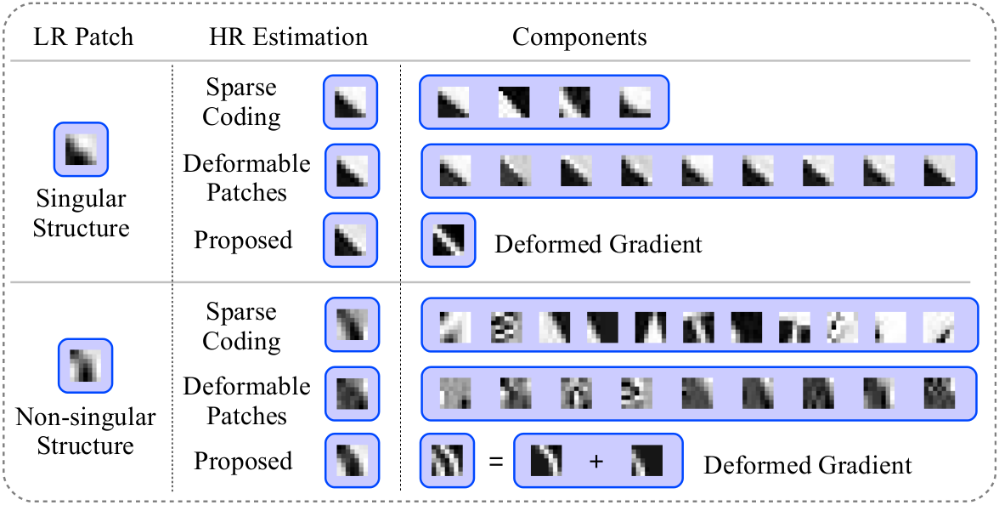

|
Modeling Deformable Gradient Compositions for Single-Image Super-resolution
Project
Abstract
We propose a single-image super-resolution method based on the gradient reconstruction. To predict the gradient field, we collect a dictionary of gradient patterns from an external set of images. We observe that there are patches representing singular primitive structures (e.g. a single edge), and non-singular ones (e.g. a triplet of edges). Based on the fact that singular primitive patches are more invariant to the scale change (i.e. have less ambiguity across different scales), we represent the non-singular primitives as compositions of singular ones, each of which is allowed some deformation. Both the input patches and dictionary elements are decomposed to contain only singular primitives. The compositional aspect of the model makes the gradient field more reliable. The deformable aspect makes the dictionary more expressive. As shown in our experimental results, the proposed method outperforms the state-of-the-art methods.
Motivation
|
 |
Singular structures such as single edges and corners are more robust to scale change. In other words they are less ambiguous across different scales. Also, the non-singular structures are more likely to be lost during the degradation. Most methods work better on singular structures. Here are the comparision with sparse coding and deformable patches methods, showing the HR estimation and their components(linear or weighed combinations ). They work well on singular structures. But for non-singular case, the sparse coding method tends to select more complex patterns, leading to the blurred HR estimation. And for deformable patches method, it is hard to find appropriate candidates for the non-singular structure. This inspires us to decompose the non-singular structures to singular structures. We also exploit the deformable patch based method to make the dictionary deformable and, thus, more expressive.
|
Download
Camera Ready Paper
Extened Abstract
BibTex
@INPROCEEDINGS{Zhu2015,
author={Yu Zhu and Yanning Zhang and Boyan Bonev and Alan L. Yuille},
booktitle={Computer Vision and Pattern Recognition (CVPR), 2015 IEEE Conference on},
title={Modeling Deformable Gradient Compositions for Single-Image Super-resolution},
year={2015},
month={June},
}
|